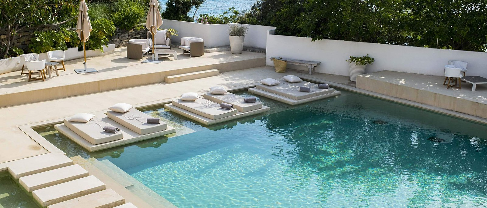
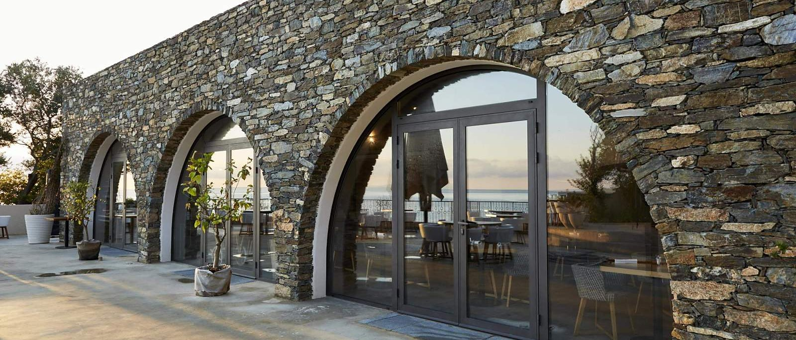
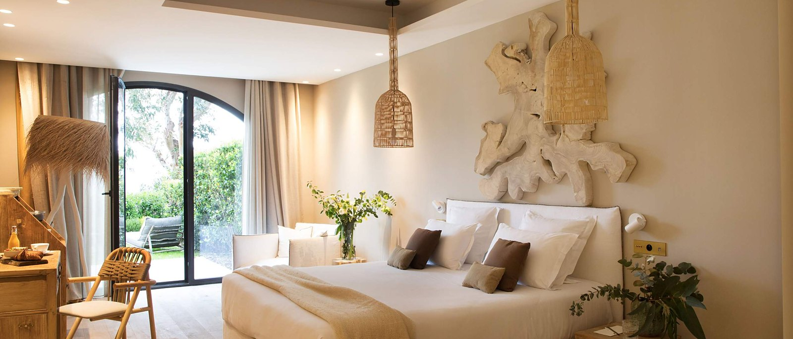
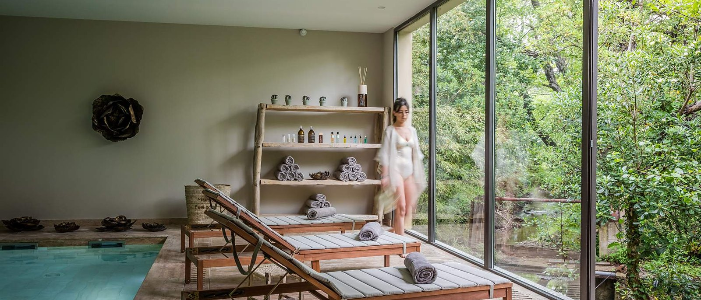
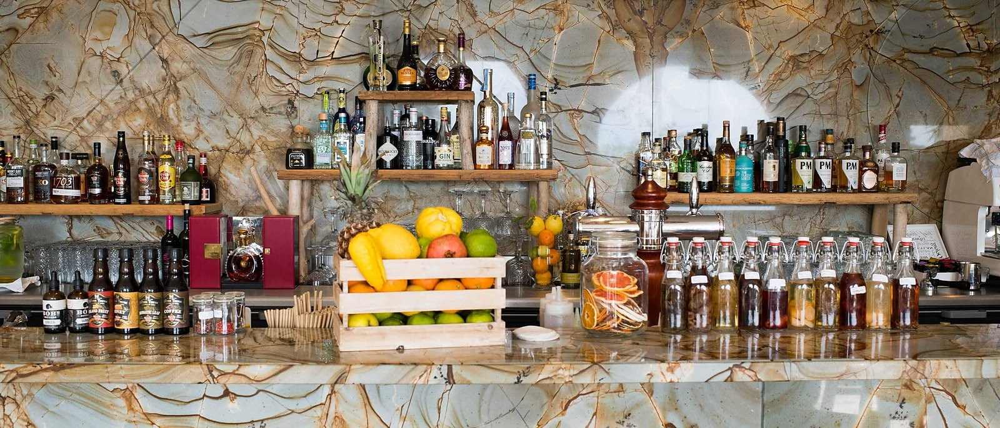

Domaine de Misíncu, Cap Corse : l'ancien Caribou rendu à la mer
Cinq hectares traversés par un ruisseau qui a donné son nom à la maison, un hôtel mythique des années 1970 revenu en mai 2025, et la cuisine d'une cheffe étoilée du Luberon.

La piscine extérieure du domaine et ses transats flottants. Photo : Domaine de Misíncu, site officiel.
TL;DR : l'essentielScore LMHS 9,0/10, Indice Corse 4,7/5
- Le nom vient d'un ruisseau. « Misíncu » est le nom du cours d'eau qui traverse les cinq hectares du domaine, face à la Méditerranée. C'est la maison qui le raconte, et c'est le genre de détail qui dit tout d'un lieu : ici, on a pris le nom du terrain plutôt que celui d'un propriétaire.
- C'était Le Caribou, et la date compte. L'hôtel-restaurant a été créé par Maurice Catoni dans les années 1950, mais c'est à partir des années 1970 qu'il devient un lieu mythique, où Serge Gainsbourg venait en pèlerinage. La maison a rouvert en mai 2025.
- Le spa fait 350 m² et il est détaillé. Cinq cabines de soins, sauna, hammam, douche sensorielle, fontaine de glace et espace fitness, sous concept Pure Wellness, avec des soins Biologique Recherche et Nucca. La maison compte par ailleurs deux piscines, une intérieure et une extérieure.
Avis documentaire. Nous n'avons pas dormi au Misíncu. Les éléments de cette page ont été relevés le 4 septembre 2026 sur le site officiel de la maison, page par page. Aucun tarif n'est publié ici : la maison n'affiche pas de grille sur son site, et ses prix se demandent directement à la réception.
Le Caribou de Maurice Catoni, et ce que Gainsbourg venait y chercher
Commençons par remettre les dates en ordre, parce qu'elles circulent brouillées. Le Domaine de Misíncu s'appelait Le Caribou. C'était un hôtel-restaurant créé par Maurice Catoni dans les années 1950, et la maison est très précise sur la suite : c'est à partir des années 1970 qu'il devient un lieu mythique. Serge Gainsbourg en avait fait, selon les mots de la maison, un lieu de pèlerinage. On lit ailleurs des listes d'acteurs plus longues ; l'établissement ne cite que ce nom, et nous nous en tenons là.
Le nom actuel, lui, ne vient de personne. « Misíncu » est le nom du ruisseau qui traverse le domaine et descend vers la Méditerranée. Cinq hectares de nature, au cœur du Cap Corse, à l'écart de tout. Une maison qui se nomme d'après son cours d'eau annonce assez clairement ce qu'elle vend : le terrain d'abord.

Les arcades de pierre du domaine, ouvertes sur la salle et sur la mer. Photo : Domaine de Misíncu, site officiel.
La maison a rouvert au mois de mai 2025. C'est la date qu'elle publie, et c'est celle que nous retenons. Le domaine annonce alors ses cinq hectares comme argument d'ouverture, avant même de parler de chambres, ce qui est cohérent avec tout le reste.
Vingt-neuf chambres, et sept villas aux toits de lauzes
La maison compte 29 chambres, des chambres supérieures de 25 m² aux junior suites de 40 m² en moyenne. Mais l'offre qui la distingue est ailleurs : sept villas, voisines de l'hôtel, dispersées dans un havre naturel en surplomb de la mer, et coiffées de toits parés de lauzes. La plus grande, la Villa Montecristo, développe 320 m² avec vue mer. Elles sont pensées pour les séjours en famille ou entre amis, ce qui, sur une propriété de cinq hectares, se conçoit sans que personne ne se marche dessus.

Une chambre du domaine, ouverte sur le jardin. Photo : Domaine de Misíncu, site officiel.
Le domaine donne un accès privé à la plage, à pied depuis les chambres comme depuis les villas, avec transats et draps de bains. C'est un point qu'il faut souligner parce qu'il est rare : on ne prend pas la voiture pour se baigner.
Un spa de 350 m², et deux piscines
C'est le morceau le mieux documenté de la maison, et le plus convaincant. Le spa s'étend sur 350 m² sous concept Pure Wellness, et la maison détaille son contenu plutôt que de vendre une ambiance : cinq vastes cabines de soins, un sauna, un hammam, une douche sensorielle, une fontaine de glace et un espace fitness. Les soins esthétiques sur mesure associent deux marques, Biologique Recherche et Nucca.

La piscine intérieure du spa, ouverte sur la végétation. Photo : Domaine de Misíncu, site officiel.
La fontaine de glace mérite qu'on s'y arrête. C'est un équipement de parcours nordique que l'on voit apparaître dans les spas français depuis deux ou trois ans, au même titre que le bain froid dont nous tenons un classement parisien. Le voir dans un 5 étoiles du Cap Corse dit quelque chose de la vitesse à laquelle cette culture du chaud et froid s'installe. La maison exploite par ailleurs deux piscines, une intérieure et une extérieure, ce qui règle la question de la saison.
Reine Sammut signe les deux tables
C'est le point sur lequel il faut être exact, parce qu'on lit souvent moins que la réalité. Reine Sammut, cheffe étoilée de La Fenière dans le Luberon, n'est pas une caution lointaine : la maison écrit qu'elle signe l'identité culinaire des deux restaurants, La Table et Le Jardin. Le site parle de « notre cheffe », et présente une cuisine du Sud, libre et inspirée, qui épouse le territoire du Cap Corse, ses légumes de potager et son maquis.

Le bar du domaine, sous son mur d'onyx. Photo : Domaine de Misíncu, site officiel.
A Spartera n'est pas une plage, contrairement à ce qu'on lit régulièrement. C'est le nom que la maison donne à son esprit de partage et à sa programmation : tour à tour table de plage, table au cœur du jardin, ou Spuntinu, l'apéritif en concert sous les oliviers ou au bord de la piscine. Le mot est corse et il veut dire le partage ; c'est un concept d'été, pas un lieu.
Écolabel européen, permaculture et jardin mandala
Voici la partie que presque personne ne reprend, et qui est pourtant la plus documentée par la maison. Le Domaine de Misíncu a renouvelé son Écolabel européen dans la catégorie des hébergements touristiques. Il dispose de sa propre station d'épuration, ses panneaux solaires assurent son indépendance en eau chaude, et la chasse au plastique y est quotidienne.
Le domaine pratique la permaculture, avec la volonté déclarée de transformer ses terres en zones de culture respectueuses de l'environnement. Deux jardins structurent la propriété : le jardin potager, dessiné sur un parcours qui conduit de l'hôtel à la plage, et le jardin Mandala, inspiré du bouddhisme et construit autour de formes cylindriques et géométriques, pensé comme un espace de méditation. Peu d'hôtels de cette catégorie vont aussi loin, et encore moins l'écrivent aussi précisément.
Le Domaine de Misíncu en un coup d'œil
| Adresse | Lieu-dit Misincu, 20228 Cagnano, Cap Corse |
| Classement | 5 étoiles |
| Hébergement | 29 chambres, de 25 m² à 40 m² en moyenne pour les junior suites, et 7 villas |
| Villas | Toits de lauzes, en surplomb de la mer ; la Villa Montecristo fait 320 m² |
| Spa | 350 m², concept Pure Wellness, 5 cabines, sauna, hammam, douche sensorielle, fontaine de glace, fitness |
| Soins | Biologique Recherche et Nucca |
| Piscines | Deux, une intérieure et une extérieure |
| Tables | La Table et Le Jardin, identité culinaire signée Reine Sammut ; bar avec vue panoramique |
| Plage | Accès privé à pied depuis les chambres et les villas, transats et draps de bains |
| Environnement | Écolabel européen, station d'épuration, panneaux solaires, permaculture |
| Téléphone | +33 4 95 35 21 21 |
| Tarifs | n. c. : la maison ne publie pas de grille sur son site |
Relevé le 4 septembre 2026 sur le site officiel de la maison, page par page.
Notre note, et ce qu'elle mesure
Le Score LMHS de 9,0/10 tient à trois choses. D'abord la précision de ce que la maison publie : très peu d'hôtels détaillent leur spa au niveau de la fontaine de glace et de la douche sensorielle, et cette transparence est un signe. Ensuite la table, parce qu'une identité culinaire signée par une cheffe étoilée n'est pas une carte de plus. Enfin l'engagement environnemental, qui est ici documenté et labellisé plutôt qu'affiché.
L'Indice Corse à 4,7/5 mesure autre chose : à quel point l'adresse appartient à son territoire. Un domaine qui porte le nom de son ruisseau, qui cultive son potager entre l'hôtel et la plage et qui reprend un lieu de la mémoire insulaire ne pourrait exister nulle part ailleurs. C'est l'un des indices les plus élevés que nous ayons attribués en Corse, aux côtés du Hameau de Saparale, dans la vallée de l'Ortolo.
Questions fréquentes sur le Domaine de Misíncu
Où se trouve le Domaine de Misíncu ?
À Cagnano, en Cap Corse, à l'adresse « Lieu-dit Misincu, 20228 Cagnano ». Le domaine s'étend sur cinq hectares face à la Méditerranée, traversés par le ruisseau qui lui a donné son nom. Il donne un accès privé à la plage, à pied depuis les chambres comme depuis les villas. Téléphone : +33 4 95 35 21 21.
Combien de chambres et de villas compte le Domaine de Misíncu ?
29 chambres, des chambres supérieures de 25 m² aux junior suites de 40 m² en moyenne, et sept villas voisines de l'hôtel, aux toits parés de lauzes, dispersées en surplomb de la mer. La plus grande, la Villa Montecristo, fait 320 m² avec vue mer et s'adresse aux séjours en famille ou entre amis.
Que propose le spa du Domaine de Misíncu ?
Un spa de 350 m² sous concept Pure Wellness, avec cinq vastes cabines de soins, un sauna, un hammam, une douche sensorielle, une fontaine de glace et un espace fitness. Les soins esthétiques sur mesure associent Biologique Recherche et Nucca. Le domaine compte par ailleurs deux piscines, une intérieure et une extérieure, ainsi que du shiatsu et du yoga.
Qui signe la cuisine du Domaine de Misíncu ?
Reine Sammut, cheffe étoilée de La Fenière dans le Luberon. La maison écrit qu'elle signe l'identité culinaire des deux restaurants, La Table et Le Jardin, et la présente comme « notre cheffe ». La cuisine est décrite comme une cuisine du Sud, libre et inspirée, nourrie du maquis et du potager du domaine. Un bar avec vue panoramique complète l'offre.
Qu'est-ce que A Spartera au Domaine de Misíncu ?
Ce n'est pas une plage, contrairement à ce qu'on lit souvent. A Spartera est le concept de partage de la maison et le nom de sa programmation estivale : tour à tour table de plage, table au cœur du jardin, ou Spuntinu, un apéritif en concert sous les oliviers ou au bord de la piscine. Le mot est corse et signifie le partage.
Le Domaine de Misíncu était-il un autre hôtel avant ?
Oui. Il s'appelait Le Caribou, hôtel-restaurant créé par Maurice Catoni dans les années 1950. La maison précise qu'il est devenu un lieu mythique à partir des années 1970, et que Serge Gainsbourg en avait fait un lieu de pèlerinage. Le Domaine de Misíncu a rouvert en mai 2025.
Le mot de LucasSe nommer d'après son ruisseau
Il y a deux façons de reprendre un lieu qui a été mythique. La première consiste à en exploiter le nom. La seconde, plus rare, consiste à en changer, et à prendre celui du ruisseau qui traverse le terrain. Le Caribou est devenu Misíncu, l'hôtel a mis son potager sur le chemin de la plage et son spa sous label européen, et il a confié ses deux tables à une cheffe étoilée. C'est une manière tranquille de dire que l'on ne vit pas d'une légende, mais d'un endroit.
Méthode et sources
Cette fiche a été établie le 4 septembre 2026 à partir du site officiel du Domaine de Misíncu, page par page : accueil, notre ADN, chambres, suites, villas, spa et fitness, services, La Table, actualités et mentions légales. Les chiffres, les noms et les dates proviennent tous de ces pages.
Aucun séjour de contrôle n'a été effectué. Nous n'avons pas dormi au Misíncu, et nous ne publions aucun tarif : la maison n'affiche pas de grille sur son site.
Pour prolonger, nous tenons un avis sur le Hameau de Saparale, en Corse-du-Sud, un palmarès national des meilleurs hôtels spa et un classement des thalassos du sud de la France.